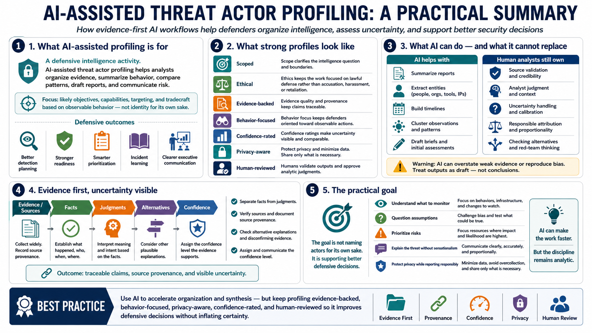

Course Summary and Key Takeaways
Connecting to LMS... Progress: in progress

Narration
AI-assisted threat actor profiling helps analysts organize evidence, summarize behavior, compare patterns, draft reports, and communicate risk. It is a defensive intelligence activity focused on likely objectives, capabilities, targeting, and tradecraft. The value of the profile is measured by whether it supports better detection planning, readiness, prioritization, incident learning, and executive communication.
Strong profiles are scoped, ethical, evidence-backed, behavior-focused, confidence-rated, privacy-aware, and reviewed by humans. Scope clarifies the intelligence question and boundaries. Ethics keeps the work focused on lawful defense rather than accusation, harassment, or retaliation. Evidence quality and source provenance keep claims traceable. Behavior-focused analysis keeps defenders oriented toward what they can observe and prepare for.
AI does not replace source validation, analyst judgment, uncertainty handling, or responsible attribution. It can summarize reports, extract entities, build timelines, cluster observations, and draft briefs, but it can also overstate weak evidence or reproduce bias. Human analysts remain responsible for verifying sources, separating facts from judgments, checking alternatives, and deciding what confidence level the evidence supports.
The goal is not to name actors for its own sake. The goal is to support better defensive decisions. A useful profile helps teams understand what to monitor, what assumptions to question, which risks deserve attention, and how to explain the threat without sensationalism. AI can make that work faster, but the discipline remains analytic: evidence first, uncertainty visible, privacy protected, and reporting responsible.